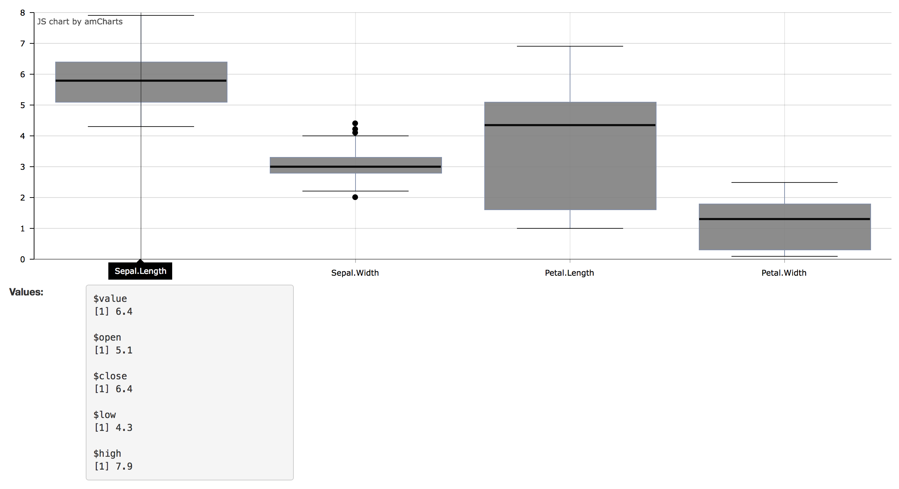

Basic use
You can easily include charts in your shiny apps with the functions amChartsOutput(outputId) and renderAmCharts(expr).
require(shiny)
shinyApp(
ui = fluidPage(amChartsOutput(outputId = "amchart")),
server = function(input, output) {
output$amchart <- renderAmCharts({
# minimal example
iris <- get(x = "iris", pos = "package:datasets")
amBoxplot(iris[, -5])
})
}
)Shiny interactions
Moreover, you can get the result from a click by adding a listener to you graph. For doing this we use the function addListener(.Object, name, expression). The argument ‘name’ is the event which trigger the event, in this case clickGraphItem detect a click on the chart values. The argument expression is a character string corresponding to a JS function:
function (event) {
Shiny.onInputChange('myValues', event.item.values);
}It is define a new input with the id=‘myValues’, for which the result sent to the server are the chart values at the click.
require(shiny)
shinyApp(
ui = fluidPage(
amChartsOutput(outputId = "amchart"),
fluidRow(
column(width = 1, strong("Values: ")),
column(width = 3, verbatimTextOutput("click"))
)
),
server = function(input, output) {
output$amchart <- renderAmCharts({
# build the chart
pipeR::pipeline(
amBoxplot(iris[, -5]),
addListener(name = 'clickGraphItem',
expression = paste('function (event) {',
'Shiny.onInputChange(\'myValues\', event.item.values);',
'}'))
)
})
output$click <- renderPrint(input$myValues)
}
)